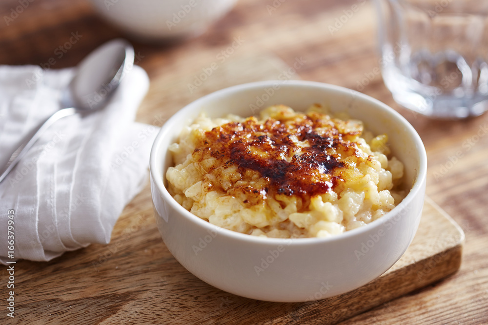

Inicio
Arroz con leche

Por Abraham Gomez N
Un postre CLÁSICO. Disfruta de un ARROZ con LECHE con la cremosidad de CARNATION® CLAVEL® y el toque dulce de LA LECHERA®. ¡No puede faltar en tu mesa!
Ingredientes
- 4 1/2 Tazas de agua
- 1 Raja de canela
- 1 Taza de arroz, remojado en agua caliente por 20 minutos y escurrido1 Taza de arroz, remojado en agua caliente por 20 minutos y escurrido
- 1 Lata de Leche Condensada LA LECHERA®
- 1 Lata de Leche Evaporada CARNATION® CLAVEL®
- 1/2 Taza de pasas
- 1 Cucharada de canela, molida
Pasos
- Calienta el agua con la canela y cuando suelte el hervor, agrega el arroz; cocina durante 15 minutos o hasta que el arroz esté tierno.
- Vierte la Leche Condensada LA LECHERA®, la Leche Evaporada CARNATION® CLAVEL® y las pasas; mezcla y continúa la cocción a fuego bajo de 20 a 25 minutos hasta que espese ligeramente.Vierte la Leche Condensada LA LECHERA®, la Leche Evaporada CARNATION® CLAVEL® y las pasas; mezcla y continúa la cocción a fuego bajo de 20 a 25 minutos hasta que espese ligeramente.
- Sirve tibio o frío y espolvorea con canela molida.